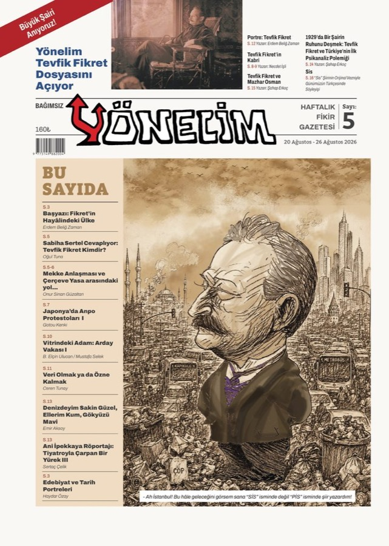
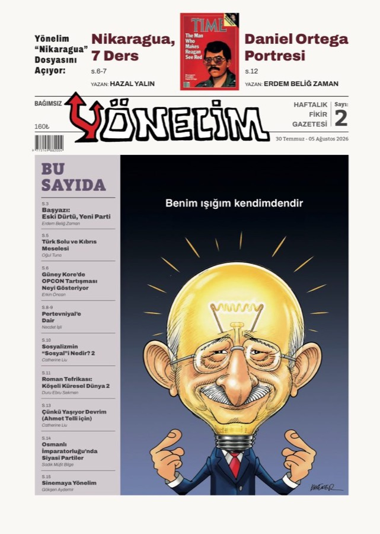

Haftalık Gazete
Bültene abone ol
Haftalık Kültürel Gazete
Başyazı
Gündem
Dünya
Hayat
Portre
Teori
Sinema
Kültür Sanat
Tarih
7 Gün
Sifon
Yazarlar
Yazılarda ara
Sayılar

Oku
Sayı 5: 20 – 26 Ağustos 2026
Bu sayının yazıları →

Oku
Sayı 2: 30 Temmuz – 5 Ağustos 2026
Bu sayının yazıları →